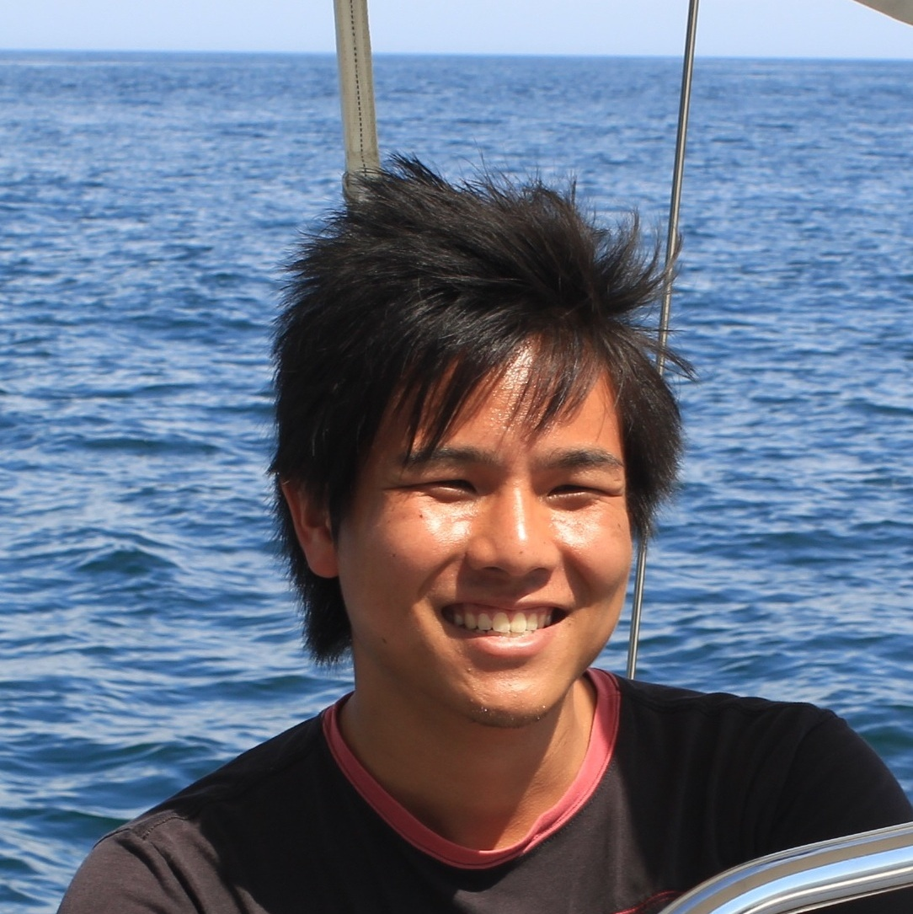
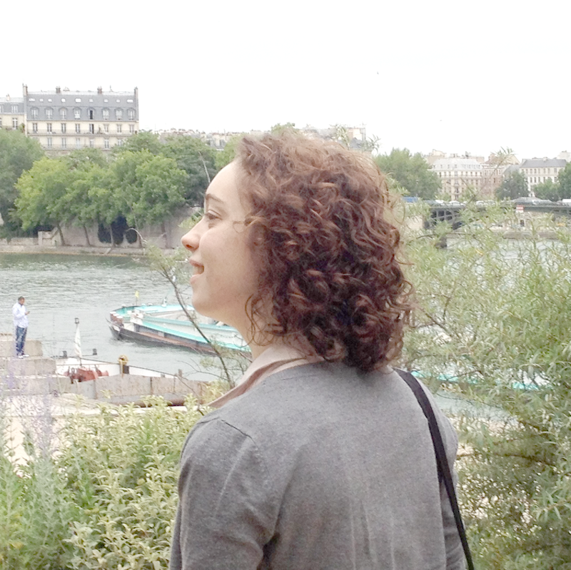
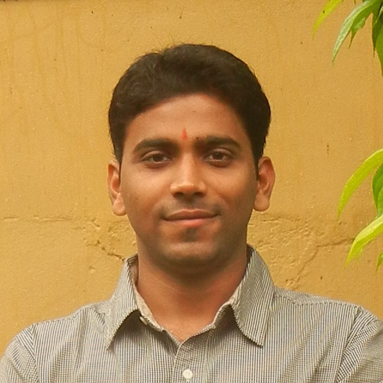

Catherine D'Ignazio
@kanarinka
Catherine D'Ignazio, a.k.a. kanarinka, is an artist, software developer and educator. She is the Director of the Institute for Infinitely Small Things, an interventionist performance troupe, and former Director of the Experimental Geography Research Cluster at RISD's Digital+Media MFA program. She has also taught in the Comparative Media Studies program at MIT since 2009. Her artwork has been exhibited at the ICA Boston, Eyebeam, and MASSMoCA, and has won awards from the Tanne Foundation and Turbulence.org. Catherine has a BA in International Relations from Tufts University (Summa Cum Laude, Phi Beta Kappa) and an MFA in Studio Art from Maine College of Art. She has lived and worked in Paris, Buenos Aires, and Michigan, and currently resides in Waltham, MA.
At the lab, Catherine is interested in researching experimental ways of engaging more deeply with place and spatial justice issues - through storytelling, maps, media, social practice and algorithms.
Erhardt Graeff
Erhardt Graeff enjoys working at the intersections of politics, technology, and education. His research interests include civic engagement, social entrepreneurship, education policy, social media, and international development. Before joining the Media Lab, he was a research assistant at Harvard Project Zero's GoodWork Project and the Berkman Center for Internet & Society. Erhardt is also Co-Founder of BetterGrads, an online college mentoring program for high school students, a founding trustee of The Awesome Foundation, and a founding member of the Web Ecology Project. He holds an MPhil in Modern Society and Global Transformations from the University of Cambridge and B.S. degrees in Information Technology and International Studies from Rochester Institute of Technology.
Chunglin Wen
Chunglin Wen is interested in computational photography and data-driven computer vision. He is also interested in big data problem, no matter it's textual data or visual data. He receives his M.S. degree from Computer Science Department, National Taiwan University and B.B.A. degree from Information Management Department at the same university. He was also an exchanging student at the University of Tokyo. Before joining the Media Lab, he worked in Yahoo as a software engineer and the University of Toronto as a research assistant. He spent the 2012 summer at Disney Research Boston as a research intern.
Daniel Smilkov
Daniel Smilkov received his BSc and MSc in computer science from the University of Ss. Cyril and Methodius in Skopje. While doing his master's, he had an unusual 8-months internship at IBM T.J. Watson Research Center where he worked on routing algorithms for P2P video-conferencing. His IBM internship resulted in the publishing of 2 conference papers. Later, he took a more interdisciplinary path in the field of network science shifting his interests to mining, modeling and designing algorithms for large real-world social, technological and biological networks. Before coming to the Media Lab, he worked at the Macedonian Academy of Sciences and Arts co-authoring 5 journal papers in the field of network science.
Markus Kayser
Markus Kayser studied furniture and product design (BA) at London Metropolitan University and received his MA in product design from the Royal College of Art in London, UK. His recent work, 'Solar Sinter', has been published worldwide and broadcast on TV internationally as well as reaching a wide audience online with over one million views. Kayser is interested in the exploration of hybrid solutions, linking new technology and natural energy to evaluate opportunities and to question current methodologies in manufacturing, by testing new scenarios of production and material fabrication.
Awards
- 2012, Ars Electronica, Award of Distinction, Linz, Austria.
- 2012, W Hotel Designers of the Future Award, Design Miami/Basel, Basel, Switzerland.
- 2012, Arts Foundation Fellowship Award, Product Design, The Arts Foundation, London, UK.
- 2011, Best Visual Impact, New Windows on Willesden Green Project, The Architecture Foundation and Brent Council, London, UK.
- 2011, Sustain Award, Royal College of Art, London, UK
Sophia Brueckner
Sophia Brueckner, born in Detroit, MI, is an artist and engineer. Inseparable from computers since the age of one, she believes she is a cyborg. She received her Sc.B. in Computer Science and Applied Mathematics from Brown University. As a software engineer at Google, she worked on the front-end development and interface design of products used by tens of millions and later on experimental projects within Google Research. Brueckner recently earned her MFA in Digital + Media at the Rhode Island School of Design and was also an instructor there teaching a course on science fiction and art. Her artwork has been exhibited internationally, and, in particular, she is interested in interaction design, generative art, algorithmic writing, and, as a technology antidote, painting. She feels an urgency to understand and bring awareness to technology's controlling effects, and to encourage the ethical and thoughtful design of new technologies.
Dan Sawada
Dan Sawada is a M.S. Course Student at the MIT Media Lab. Prior to joining the lab, he received his B.A. in Environment and Information Studies (Computer Science) from Keio University in Japan. His research mainly focuses on decentralized mobile networks and proximal communication, and is interested in exploring new ways of how people, vehicles, and devices can interact with each other without relying on conventional network infrastructures. Apart from research, he has been involved with Pieceture Inc., which is a Tokyo-based IT education start-up. He designed tech-camp programs for teens, and enjoyed teaching app development every summer.
Ayush Bhandari
Ayush is interested in mathematical/signal processing aspects of computational imaging and femto-photography. Before coming to MIT, he has worked at INRIA-Rennes, NTU Singapore, CUHK, Hong Kong and EPFL, Switzerland in topics linked with signal processing and its applications in biomedical engineering and digital communications.
Abdulrahman Idlbi
Abdulrahman Idlbi is interested in exploring different ways of engaging kids with creative learning experiences while using building tools that connect the physical and digital worlds. He's also investigating learning settings and communities that empower the learners in ways that have the potential to replace the current model of School. Before joining the Media Lab, he worked in Syria and Saudi Arabia in designing and implementing various programs for kids to learn and create in various contexts, including school, after-school and summer programs. Abdulrahman holds a BS in computer engineering from the University of Damascus, Syria.
Amy Yu
Amy Yu's research interests focus on utilizing digital data and network science to understand social phenomena and inform decisions that affect innovation, business, and public policy. Before MIT, Amy was a research associate at Harvard Business School and a consultant at Synthosys, working with the National Science Foundation on the STAR METRICS initiative. She has also worked as an analyst in the Index, Portfolio and Risk Solutions group within Global Research at Barclays Capital. Amy graduated from the Jerome Fisher Program in Management and Technology at the University of Pennsylvania, receiving undergraduate degrees in Computer Science and Economics with concentrations in Finance and Operations and Information Management.
Will Langford
@langfordw
Will Langford is interested in bringing fabrication into the digital age. He is exploring ways robots can be used to assemble objects from discrete parts such that the objects function may be embedded in its form. He holds a BS in mechanical engineering and a minor in engineering management from Tufts University. Upon graduation he received the inaugural Vincent Manno Leadership Award for his work founding and leading the Tufts Robotics Club. He and a team of three other Tufts students were awarded the O'Leary Design Award and placed second in the national FAA Design Competition for Universities with their design for an autonomous foreign object debris collection system for airport runways. Langford has also worked at Makerbot Industries, an open-source 3D printing company, where he developed hardware and software to extend the capabilities of Makerbot 3D printers.
Rebecca Kleinberger
Rebecca Kleinberger obtained a MRes in virtual environment and computer graphics from University College London and a mechanical engineering diploma from ENSAM ParisTech. Rebecca is interested by the cognitive and neurological process involved in music generation, listening, and memorization. She has recently been working on the acoustical aspects of spatialized audio and on the modeling of sound based on physics simulation.
Philippa Mothersill
Philippa Mothersill is interested in the design of intuitive, tangible, and multi-sensorial forms of communication which blur the boundary between the physical and digital worlds. She holds graduate degrees in Aeronautical Engineering from the University of Bristol as well as Industrial Design Engineering from the Royal College of Art. Before coming to the Media Lab, she honed her technical and artistic skills whilst developing design language for new technologies and transforming consumer insights into physical products at Procter & Gamble's Gillette R&D centre in the UK. She is fascinated by the language of physical objects, and is currently working to integrate her knowledge in this area into the design of our digital world.
Sheng Kai Tang (Tony)
Sheng Kai Tang (Tony) is interested in discovering and developing artifacts with adaptive abilities. He was a User Experience Design Specialist in ASUS Design Center and an adjunct lecturer in National Chiao Tung University. He focuses on the development of innovative user experience from both design (Artifact Design) and science (Human Computer Interaction) perspectives. Tony's design productions were demonstrated in CES, Computex and CeBIT. Research findings were published in CHI, TEI and HCI International. Interactive Art installations were exhibited in Taiwan Designer's Week and 2011 International Taipei Flora Expo. Prior to ASUS Design Center, Tony was working in the COmputational DEsign Lab of Carnegie Mellon University, Center for Design Informatics of Harvard, and Graduate School of Architecture of National Chiao Tung University. He holds a Master of Computation Design from Carnegie Mellon University, a Master of Applied Art from National Chiao Tung University and a Bachelor of Architecture from Fung Chia University.
Pragun Goyal
Pragun received his BTech in computer science and engineering from the IIT Delhi, where he worked on pedestrian inertial navigation. After graduating, he spent a year at the All India Institute of Medical Sciences at Delhi testing and developing prototypes of a biosignal acquisition device to record Brainstem Auditory Evoked Potentials from infants, followed by almost a year of hacking and travelling as a Fellow at the Unlike Labs. Currently, he is a Research Assistant in the Responsive Environments group at the Media Lab. He is interested in product design, biosignal sensors and almost anything that is analog and makes sounds.
Carlos David González

Carlos David Gonzalez Uribe was born in Mexico City. He received his Undergraduate Degree in Architecture from ITESM in Mexico City and his Masters in Architecture and Urban Design from Pratt Institute in 2011, where he was honored with the Pratt Circle Award and Outstanding Academic Achievement. In 2010 he was also awarded the CONACYT Fellowship by the Mexican Goverment. After graduation he worked as an intern in the research and development department of Bentley's Generative Components department and served as a media consultant at the University of Pennsylvania with Prof. Ferda Kolatan. Currently Carlos is working as an independent researcher with a focus on developing complex, parametric design systems for architectural applications. He is also presenting a project at the First Istanbul Design Biennialin collaboration with su11. Carlos is sponsored by Bentley Systems Incorporated, Club MIT de Mexico and The National Science and Technology Counsil from Mexico for his Master Studies at the Media Lab.
Charles Fracchia
@charlesfracchia
Charles Fracchia works on creating interfaces between biological entities and fabrication, electronic and computer systems. He is an IBM Research Ph.D. fellow and graduated from Imperial College London in Biology where he created a bio-electronic interface in E. coli. Current projects include creating a Star Trek replicator using DNA origami and enabling an industrial revolution in biology by creating novel tools for biological and medical experimentation.
Amy Canham
Amy Canham is fascinated by the subtle characteristics which constitute intuitive user interfaces and how UI/UX design affects technology adoption in developing countries. Amy holds a BS in electrical engineering from Boston University and has traveled to three continents to study the ways in which rural communities interact with technology. Before coming to the Media Lab, she was a visiting fellow at BU's Biomedical Engineering department and developed several portable medical devices to address local needs in diagnostics and respiratory health. At the Media Lab, Amy is working on developing disruptive, frugal innovations for rural India.
Sam Calisch
Sam Calisch is an applied mathematician interested in using geometry and optimization for good and fun in the physical world. Before coming to CBA, he spent two years at Otherlab, a small, independent R&D laboratory based in San Francisco. There he was part-time programmer and mathematical modeler, part-time machinist and fabricator, working at the intersection of fabrication, computation, robotics, and systems design. Sam's credentials include a chainsaw certificate with highest honors, as well as a BA in mathematics from Grinnell College.
Champika Fernando
Champika Fernando received her BS in computer science from the University of Toronto. For the past year she's been at the Media Lab working on the design and development of the social site for Scratch 2.0 - the next version of the popular application that allows young people to imagine, program and share their projects online. Prior to the lab she worked at Google for 5 years in both California and New York, where she did front-end development on products that included Gmail, Blogger and AdWords. She is interested in the design of creative online experiences for children and ways to engage diverse communities in these experiences.
David Nuñez
davidnunez.com
David Nuñez is a creative technologist, executing projects at the intersection of art, design, and technology. He is currently a Research Assistant in the Personal Robots Group at the MIT Media Lab where he is interested in inventing new ways for people to work with robots, apps, and toys to learn and be creative. Previously, David ran a software development studio and consulting practice building joyful apps, museum exhibits, and games for kids. His recent clients have included JK Rowling's Lumos organization, Candlewick Press, PBS, PBS Kids, InwindowOutdoor, and Electric Type. His project, Bytes and Bots at the Children's Museum of Houston, engages students to explore programming ideas through an animatronic lobster and bird, and his multitouch table played the Electric Gongs, a set of instruments for the Austin Children's Museum. His robotic marionette, El Quemira, won multiple blue ribbons at the 2007 Austin Maker Faire. He also helps curate dorkbot-boston, a regular gathering of people doing strange things with electricity.
Jacqueline Kory
Jacqueline Kory is interested in how humans perceive and interact with other agents, be they computers, robots, or other humans. She wants to know what makes people people. She was awarded an NSF Graduate Research Fellowship to support her research at the Media Lab. Prior to this, Jacqueline spent a year researching human emotion and learning with Dr. Sidney D'Mello's Emotive Computing group at the University of Memphis and the University of Notre Dame. She worked at NASA for two summers, developing autonomous vehicles and laser space robots. She holds a BA in cognitive science from Vassar College.
Deepak Jagdish
Deepak Jagdish is a computational media designer (and occasionally a developer) interested in crafting visual representations of systems ranging from behavioral patterns to cities to biological systems. His undergrad background is an eclectic mix of computer science & signal processing, followed by a Master's degree in Human-Computer Interaction (HCI) from Georgia Tech. He then worked for a couple of years at Nokia Research building visualizations using some large-scale realtime data sets. At the Media Lab, he hopes to delve deeper (beyond the visual layer) into some lesser known territories like the human mind, or movements of celestial bodies, and attempt to understand & appreciate their complexities better by building interactive representations of such systems.
Jifei Ou
From body to objects to space, Jifei Ou is interested in designing interactive products and installations that bring aesthetics and technology together. His work is mainly focused on how everyday experience could be augmented by the emerging media technology. Prior to the Media Lab, Jifei worked at ART+COM in berlin and Eindhoven University of Technology as internship researcher, where he was involved in several projects of space for storytelling. His works have been published in various exhibitions, as well as honored by Art Director Club Germany and Output Award. After received a Diplom of Design in Offenbach Academy of Art and Design in Germany. Jifei is currently a Research Assistant in Tangible Media Group.
Damian Isla
Damian is entering his second tour of duty at the lab, having done an MEng with the Synthetic Characters group a decade ago. Since then he's been working on video games, first as the AI lead on Bungie's mega-hit Halo first-person shooter games for Xbox, and more recently through his consulting shop, Naimad Games, and as a co-founder of Moonshot Games, a small game studio start-up, whose first title is slated for release this November. He has spoken about games, AI and design at the International Joint Conferences on Artificial Intelligence (IJCAI), the Artificial Intelligence and Interactive Digital Entertainment Conference (AIIDE) and at Siggraph, and is a frequent speaker at the Game Developers Conference (GDC). His great loves apart from games and AI, include game engine design, character animation, interaction design, narrative and interactive story-telling, and plays in which the characters are really mean to each other. He's back at the lab to learn something about how language works.
Hayato Ikoma
Hayato Ikoma is interested in all kinds of imaging devices and beautiful biological phenomena. He received his BE in materials engineering from the University of Tokyo and his MS in biology from Kyoto University. Before joining to the MIT Media Lab, he conducted research on crystallization of semiconductor materials, fish coloration and skin regeneration of fish, using various optical microscopies. In his master's research, he was awarded the Iwadare Scholarship and the payback exemption of student loan from Japan Student Services Organization. At the Media Lab, he is interested in applying his diverse background to development of imaging devices. His graduate work at MIT is fully supported by the Funai Overseas Scholarship.
Laura Perovich
Laura Perovich is interested in designing tools that help people seamlessly engage with science in their everyday lives. She hopes to re-imagine the relationship between citizens and scientists through ubiquitous computing and artistic, emotionally-resonant approaches to data interaction. One of her current projects explores new interfaces for reporting levels of emerging household contaminants to study participants. Perovich has seven years of experience in community-based work, as a scientist researching environmental causes of diseases at Silent Spring Institute and as a Peace Corps volunteer in Guinea, West Africa. She holds a BA in mathematics and religion from Bowdoin College.
Noah Jakimo
Noah Jakimo last worked at the Cold Spring Harbor Laboratory, where he led analysis on big data created by the Mouse Brain Architecture Project. Like most of his previous research, this endeavor found answers in biology by applications of computer science. He balanced the two subjects to earn a BS degree in the latter at Caltech. Noah has built PCR machines on kitchen tables, wrote algorithms into modern DNA sequencers, and would next like to design genomes for novel experimental methods in synthetic biology.